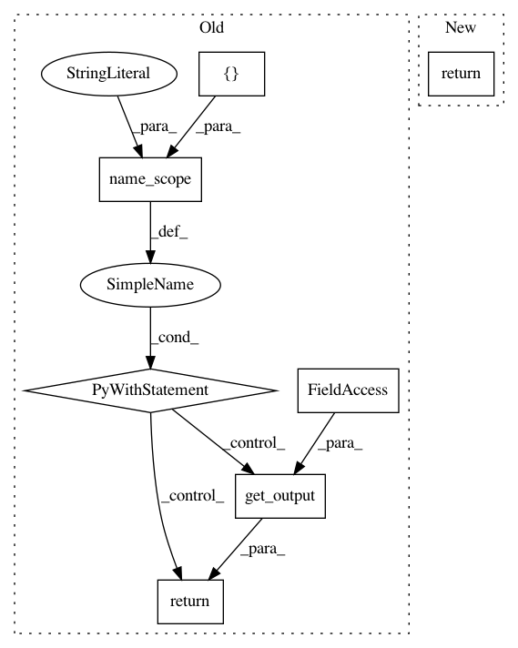

d2b072e3dc4c1b50935d0feb343e6e1debd1061c,src/garage/tf/q_functions/continuous_mlp_q_function.py,ContinuousMLPQFunction,get_qval_sym,#ContinuousMLPQFunction#Any#Any#Any#,123
Before Change
return self._f_qval(observations, actions)
def get_qval_sym(self, obs_var, action_var, name=None, **kwargs):
with tf.name_scope(name, "get_qval_sym", values=[obs_var, action_var]):
qvals = L.get_output(self._output_layer, {
self._obs_layer: obs_var,
self._action_layer: action_var
}, **kwargs)
return qvals
After Change
The tf.Tensor output of Discrete MLP QFunction.
with tf.compat.v1.variable_scope(self._variable_scope):
return self.model.build(state_input, action_input, name=name)
def clone(self, name):
Return a clone of the Q-function.
In pattern: SUPERPATTERN
Frequency: 3
Non-data size: 7
Instances
Project Name: rlworkgroup/garage
Commit Name: d2b072e3dc4c1b50935d0feb343e6e1debd1061c
Time: 2019-09-27
Author: ahtsans@gmail.com
File Name: src/garage/tf/q_functions/continuous_mlp_q_function.py
Class Name: ContinuousMLPQFunction
Method Name: get_qval_sym
Project Name: rlworkgroup/garage
Commit Name: 6c6331df007fb155331c2fac0107b412ab62d943
Time: 2019-09-21
Author: ahtsans@gmail.com
File Name: src/garage/tf/policies/continuous_mlp_policy.py
Class Name: ContinuousMLPPolicy
Method Name: get_action_sym
Project Name: rlworkgroup/garage
Commit Name: b50695e45350a8a4d11bd60ba1801d6ae93eddbf
Time: 2019-09-26
Author: 38871737+avnishn@users.noreply.github.com
File Name: src/garage/tf/regressors/continuous_mlp_regressor.py
Class Name: ContinuousMLPRegressor
Method Name: predict_sym